Cachly on Apple Watch
Cachly’s Apple Watch app puts the essentials on your wrist — find nearby caches, read the details and hint, follow the map or compass to ground zero, and log the find — without reaching for your phone.
What the Watch app does
The Watch app syncs with your iPhone and focuses on the in-the-field essentials:
- Nearby caches — a searchable, filterable list of caches around you.
- Cache details — distance, D/T, size, favorite points, description, hint, logs, attributes, waypoints and photos.
- Map & compass navigation — distance and direction to the selected cache.
- Quick logging — log a find (or save a draft) with dictation or Scribble.
- Lists — browse your offline and online lists.
Home screen & complications
Add Cachly as a complication on your watch face for one-tap launching — the green Cachly pin appears right on the face. The app’s home screen offers the ways in:
- Nearby — loads geocaches around your current location.
- Current — the cache you’re currently (or were last) viewing on your iPhone.
- Lists — your offline and online cache lists.
- Saved — caches stored directly on the watch with the … › Save action (if you haven’t saved any yet, Cachly tells you).
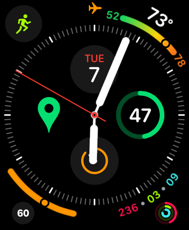
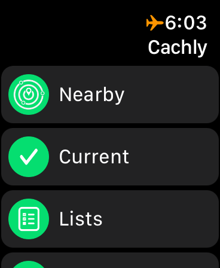
Nearby search & filters
Nearby lists the caches around you as cards showing the cache name and type, GC code, a PREM badge for premium-only caches, distance, favorite points, and the D/T ratings and container size. Search re-runs the search at your current position; Filter narrows the results:
- Finds / Hides — toggles to include or exclude your finds and your hides.
- Difficulty & Terrain — minimum and maximum ratings with stepper controls (1.0–5.0).
- Cache Size — tick the container sizes to include (Micro, Small, Medium, Large…).
- Cache Type — tick cache types individually or use Toggle All.
- Reset — back to the defaults.
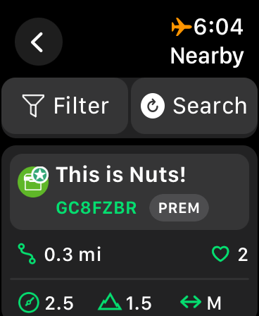
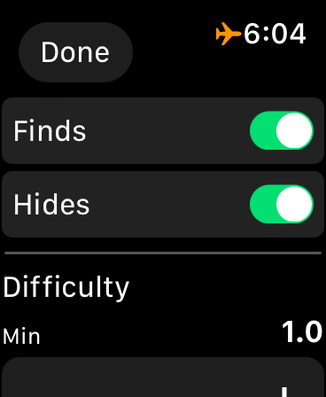
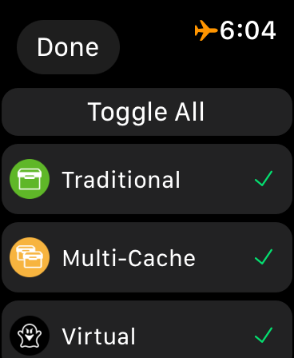
Cache details
Tap a cache to open its details: name, GC code, premium status, the date it was placed, distance, favorite points, and its difficulty, terrain and size. Scroll on for the full set of sections — Description, Hint, Logs, Attributes, Waypoints (including your own, like a parking waypoint), Photos and your Personal Note — each opening full-screen for reading on the small display.
Below the details, Log Cache starts a log (see logging), and the … button offers View Map, Compass and Save (store the cache on the watch).
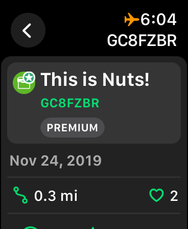
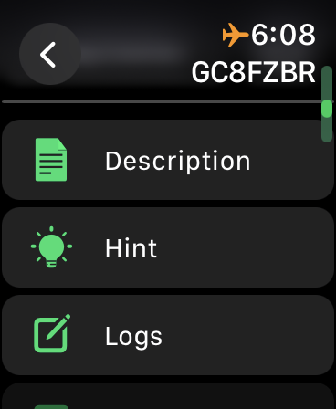
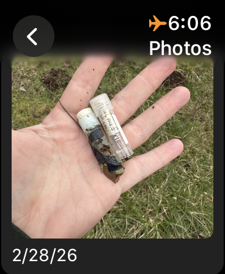
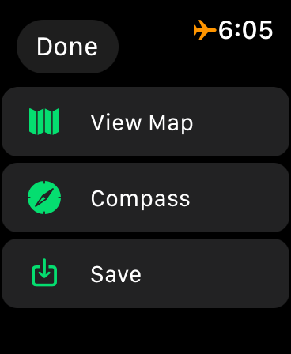
Map & compass navigation
View Map shows the cache and its waypoints as pins around your position, with the remaining distance at the top. Compass gives you a classic navigation dial: distance to go, bearing (e.g. 162° S), and the current GPS accuracy, with a red needle pointing at the cache.
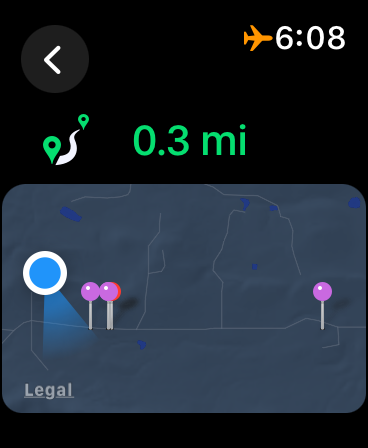
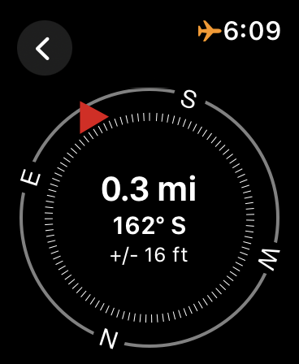
Why the compass needs you to move (older watches)
On Apple Watch Series 5 and later, Cachly shows a true compass that updates as you turn, even standing still. Earlier models have no compass sensor, so Cachly derives heading from GPS course — which only works while you’re moving. If your compass won’t update while stationary, that’s the hardware; a Series 5 or newer resolves it.
Logging from the Watch
Tap Log Cache on a cache’s details to log it right on the watch:
- Send Now / Draft — submit the log immediately, or save it as a draft to finish on your iPhone later.
- Log type — e.g. Found It.
- Message — compose your log text with dictation or Scribble.
- Send — off it goes.
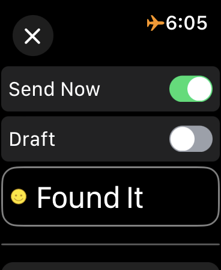
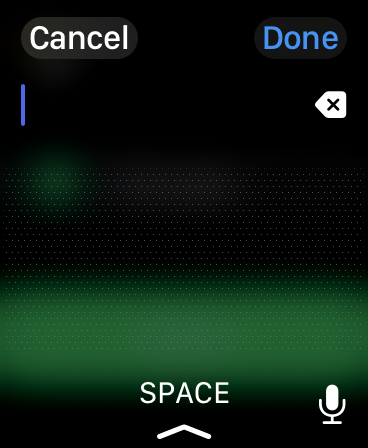
The log syncs back through your iPhone and follows the same pending/upload flow as logs written on the phone.
Lists on the Watch
The Lists screen splits into Offline Lists (from your iPhone) and Online Lists (from geocaching.com), mirroring the Lists tab on the phone.
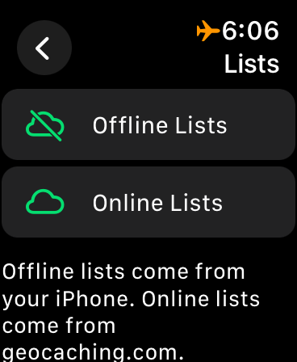